Cost-considerate variable selection
Michael Lerch
Variable Selection
Linear Models
\(y\) - response variable
\(x_j\) - explanatory variable
\[ y = \beta_0 + \beta_1 x_1 + \beta_2 x_2 + \ldots + \epsilon \]
Variable selection: Which of the \(x_j\) should we include in the model?
Why do variable selection?
- Parsimony
- Simple models are preferred to more complicated models
- Regularization
- Prevent overfitting
\[y = \beta_0 + \beta_1 x + \epsilon\]
vs
\[y = \beta_0 + \beta_1 x + \beta_2 x^2 + \ldots + \beta_5 x^5 + \epsilon\]
Overfitting
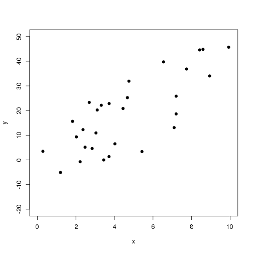
Overfitting
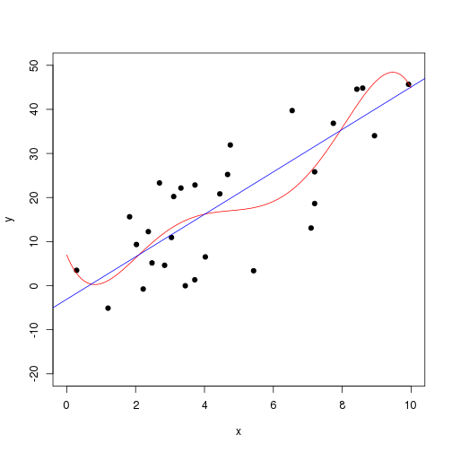
Overfitting
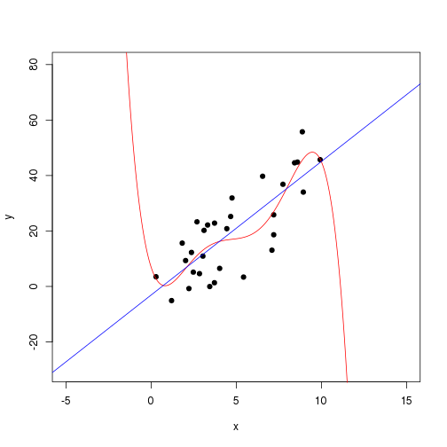
Why do variable selection?
- Parsimony
- Regularization
- Cost of data collection
Crab Claw Size and Force
As part of a study of the effects of predatory intertidal crab species on snail populations, researchers measured the mean closing forces and the propodus heights of the claws on several crabs of three species
Statistical Sleuth 2 ex 7.24
Mitutoyo 544-116-1A
$8,000
Ruler
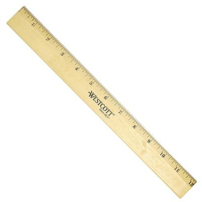
$1.50
Variables
- \(\text{force}\)
- \(\text{ruler}\)
- \(\text{micrometer}\)
- \(\text{species}\)
Model
\[ \text{force}_i = \beta_0 + \beta_1\text{ruler}_i + \\ \beta_2 \text{Species1}_i + \beta_3 \text{Species2}_i + \epsilon_i \]
\[ \text{force}_i = \beta_0 + \beta_1\text{micrometer}_i + \\ \beta_2 \text{Species1}_i + \beta_3 \text{Species2}_i + \epsilon_i \]
Heights
## [1] 5.0 6.0 6.4 6.5 6.6 7.0 7.9 7.9 8.0 8.2 8.3 8.8 12.1 12.2
## [15] 5.1 5.9 6.6 7.2 8.6 7.9 8.1 9.6 10.2 10.5 8.2 11.0 6.7 7.1
## [29] 11.2 11.4 9.4 10.7 13.1 9.4 11.6 10.2 12.5 11.8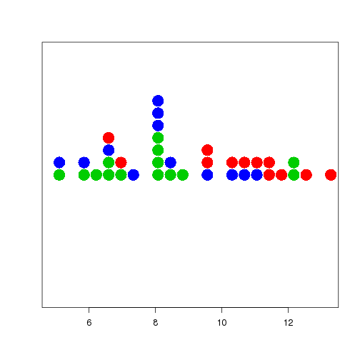
Ruler
## [1] 5 6 6 6 7 7 9 8 8 8 8 9 11 12 5 6 6 8 8 8 8 10 10
## [24] 11 8 11 7 7 11 11 9 10 13 9 11 10 12 13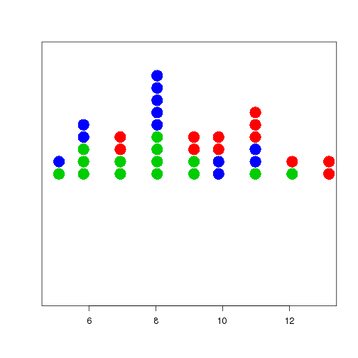
How much better is the expensive measure?
\(R^2\)
- Expensive measure: 0.669
- Cheap measure: 0.687
Prediction error
- Expensive measure: 32.204
- Cheap measure: 32.35
Larger problems
Our solution
- Define an evaluation criterion
- \(R^2\) or SSerror
- Predictive error
- Plus cost
- List all possible variable subsets
- Fit model with each variable subset
- Calculate evaluation criterion of each model
- Select the best
Well…
- \(10\) variables: \(2^{10} = 1024\) subsets
- \(20\) variables: \(2^{20} = 1\,048\,576\) subsets
- \(50\) variables: \(2^{50} = 10^{15}\) subsets
- 1 Gigabyte = \(10^9\) bytes
- 1 Terabyte = \(10^{12}\) bytes
Can we be smarter than exhaustive search?
- Cost-efficient variable selection using Branching LARS (Yue, 2010)
- Avoid searching all models with branching and bounding
Model subsets as a tree
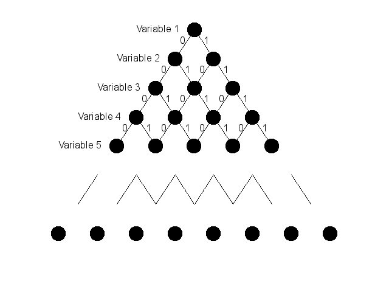
Model subsets as a tree
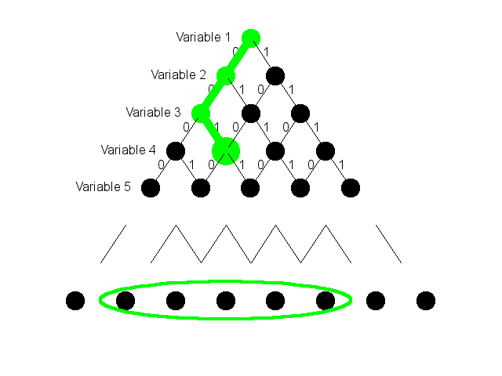
Model subsets as a tree
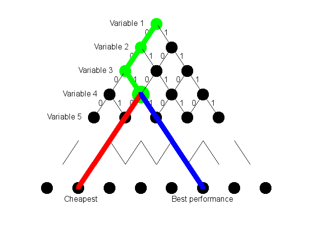
Performance

Yue (2010)
My diagnosis
There ought to be a more efficient strategy.
How do we evaluate performance without incurring cost?
Pilot study
- Pilot study
- Observations on a large number of variables
- Small number of samples
- Final study
- Observations on an efficient subset of variables
- Large number of samples
Historic data
- A large pool of data is already available
- A model is needed to make predictions based on new observations
- Measuring all predictor variables of new observations is too expensive
What exists now?
Bayesian multiple regression
- Dennis Lindley (1968)
- Cost efficient variable selection to predict a new observation
- Minimize \(E\left(\left\{y - f(x_I)\right\}^2|x_I\right) + c_I\)
- \(f(x_I) = E(y|x_I)\)
- \(c_I = \sum c_i\)
\[ E(\theta_i)^2 var(x_i) > c_i \]
Bayesian multiple regression
Missing value problem
\[ f(x) = \beta_0 + \beta_1 x_1 + \beta_2 x_2 + \beta_3 x_3 + \ldots \]
\[ f(x_I) = \beta_0 + \beta_1 x_1 + \beta_2 ? + \beta_3 x_3 + \ldots \]
Since 1968
- Bayesian multivariate regression
- Brown et al. (1999)
- Extend Lindley’s method to multivariate
Where is statistical work on this topic?
We omit variables not because we believe their coefficients to be zero, but because they cost too much relative to their predictive benefit.
Brown et al. (1999)
Machine Learning
- Peter Turney is the cost guy
The majority of machine learning literature ignores all types of cost (unless accuracy is interpreted as a type of cost measure).
Turney (2000)
What do problems these look like in machine learning?
- Raw data source
- Large database
- Images that need to be processed
- Process the raw data source for features
- Build model
- Data source exists electronically
Where is cost?
- Cost = computer time to engineer features
- Model fitting is insignificant
Procedure
- Create a set of features
- Fit model
- Evaluate performance
- If not satisfied “purchase” additional features
- Figure out a smart order to purchase these features
Examples
- He et al. (2012)
- Weiss et al. (2013)
- Classification problems
Grouping
- Paclíck et al. (2002)
- Image processing problems
- Some features are naturally grouped
- Once one feature is created additional features are available for negligible cost
- \(c_I \ne \sum c_i\)
- Purchase a group of features at a time
Review
- Exhaustive search is not realistic when there are lots of variables
- Adding variables one-at-a-time may improve efficiency
- Cost might not be additive function of component costs
Regularization
Coefficient shrinkage
\[ \hat{y} = \hat{\beta}_0 + \hat{\beta}_1 x_1 + \hat{\beta}_2 x_2 + \ldots \]
- Compare to coefficient estimates from OLS
- Shrink the \(\hat{\beta}\) towards zero
- Out performs variable selection for out-of-sample prediction (Brieman, 1995; Hoerl et al., 1986)
Methods
- Ridge regression
- Non-negative garrote (Brieman, 1995)
- Lasso (Tibsharani, 1996)
Penalized regression
Minimize
\[ \displaystyle\sum_i \left(y_i - \sum_j x_{ij} \beta_j\right)^2 \]
Subject to a constraint on the coefficients
- Ridge regression: \(\sum {\beta_j}^2 \leq t\)
- Lasso: \(\sum \left|\beta_j\right| \leq t\)
Pictorially
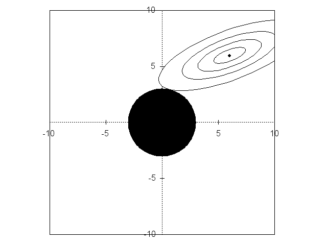
Variable selection and regularization
- I want to do variable selection to reduce costs in the problem space of large number of variables
- When there are a large number of variables, performing regularization is typically important
- Doing cost-based variable selection may help with regularization, but if so, that will be incidental
- I want to explicitly regularization via coefficient shrinkage
- I want to do this in a computationally efficient algorithm
The Lasso
Lasso
- Least Absolute Shrinkage and Selection Operator
- Simultaneous shrinkage and selection
Lasso vs Ridge
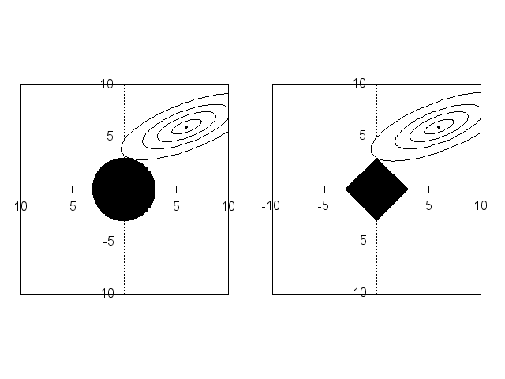
Fitting Lasso
- Gradient descent
- Bayesian Lasso (Park and Casella, 2008)
LARS
- Efron et al. (2004)
- Least Angle Regression
- Algorithm to produce a sequence of model fits
- Each step adds another variable to preceding model
LARS

Efron et al. (2004)
LARS and Lasso
- The LARS algorithm can be tweaked to produce Lasso fits
Adaptive Lasso
Zou (2006)
\[ \hat{\beta}_{lasso} = \underset{\beta}{\text{argmin}}\left\{ \displaystyle \sum_i \left(y_i - \sum_j x_{ij} \beta_j\right)^2 + \lambda \sum_j \left|\beta_j\right|\right\} \]
\[ \hat{\beta}_{alasso} = \underset{\beta}{\text{argmin}}\left\{ \displaystyle \sum_i \left(y_i - \sum_j x_{ij} \beta_j\right)^2 + \sum_j \left|\lambda_j\beta_j\right|\right\} \]
The pieces
- Lasso - simultaneous shrinkage and selection
- LARS - one-at-a-time efficient fitting
- Adaptive Lasso - different weighting for different variables
- If a variable is included, the cost is paid
- We want cost to influence selection, not shrinkage
Plan
Extend the LARS algorithm to incorporate cost at the next variable decision step.
Generalize the above to incorporate non-additive cost
Clarify the scaling of cost
Provide examples of complex cost functions
Specify an objective function used in fitting
L Breiman. Better subset regression using the nonnegative garrote. Technometrics, 37(4):373-384, 1995.
B Efron, T Hastie, I Johnstone, and R Tibsharani. Least angle regression. The Annals of statistics. 32(2):407-499, 2004.
H He, H Daumé Iii, and J Eisner. Cost-sensitive dynamic feature selection. ICML Workshop on Inferning, 2012.
R Hoerl, J Shuenemeyer, A Hoerl. A simulation of biased estimation and subset selection regression techniques. Technometrics, 28(4)369-380, 1986.
D Lindley. The choice of variables in multiple regression. Journal of the Royal Statistical Society. Series B (Methodological), 30(1):31-66, 1968.
P Paclìk, R Duin, G van Kempen, and R Kholus. On feature selection with measurement cost and grouped features. Structural, Syntactic, and …. 2002.
T Park and G Cassella. The Bayesian Lasso. Journal of the American Statistical Association, 103(482):681-686, 2008.
R Tibsharani. Regression shrinkage and selection via the lasso. Journal of the Royal Statistical Society. Series B (Methodological), 58(1):267-288, 1996.
P Turney. Types of cost in inductive concept learning. 2000.
Y Weiss, Y Elovici, L Rokach. The CASH algorithm: cost-sensitive attribute selection using histograms. Information Sciences, 222:247-268, 2013.
L Yue. Cost-efficient Variable Selection Using Branching LARS. PhD thesis, University of Western Ontario, 2010.
H Zou. The adaptive lasso and its oracle properties. Journal of the American Statistical Association, 101(476):1418-1429, 2006.
Bonus: objective functions
Lasso
\[ \hat{\beta}_{lasso} = \underset{\beta}{\text{argmin}}\left\{ \displaystyle \sum_i \left(y_i - \sum_j x_{ij} \beta_j\right)^2\right\}\; \text{subject to } \sum_j\left| \beta_j\right| \leq t \; . \]
OR
\[ \hat{\beta}_{lasso} = \underset{\beta}{\text{argmin}}\left\{ \displaystyle \sum_i \left(y_i - \sum_j x_{ij} \beta_j\right)^2 + \lambda \sum_j \left|\beta_j\right|\right\} \]
Non-negative garrote
\(\hat{\beta}\) is OLS estimate. Garrote estimate of \(\beta_j\) is \(c_j\hat{\beta_j}\) with \(c_j\) minimizing
\[ \sum_i \left(y_i - \sum_j x_{ij} c_j \hat{\beta}_{j}\right)^2\;. \]
subject to \(c_j \geq 0\) and \(\sum c_j \leq s\).
Ridge regression
\[ \hat{\beta}_{ridge} = \underset{\beta}{\text{argmin}}\left\{ \displaystyle\sum_i \left(y_i - \sum_j x_{ij} \beta_j\right)^2\right\}\; \text{subject to } \sum_j \beta_j^2 \leq t \; . \]
BLARS
\[ \underset{{\alpha},{\beta}}{\text{argmin}}\left\{ \sum_i\left(y_i - \sum_j x_{ij}\beta_j\right)^2 + \lambda\sum_j\left|\beta_j\right| + n\gamma\sum_j\alpha_jc_j\right\} \; . \]
LARS
- Standardize
- Find most correlated \(x_j\) with \(y\) (call it \(x_1\))
- Set \(\hat{\mu}^1 = \beta^1_1 x_1\) with \(\beta^1\) large enough such that \(y-\hat{\mu}^1\) is now equally correlated with \(x_1\) and next most correlated variable.
- This is first model in series.
- Graphically, we now move in the angle that bisects \(x_1\) and \(x_2\) to get \(\hat{\mu}^2 = \beta^2_1 x_1 + \beta^2_2 x_2\) such that \(y-\hat{\mu}^2\) is now equally correlated with \(x_3\) and the standardized combination of \(x_1\) and \(x_2\).
- Continue until all variables are added (at which point it is just OLS)